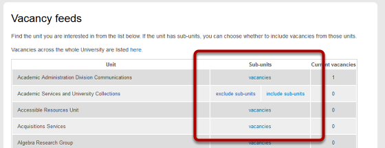
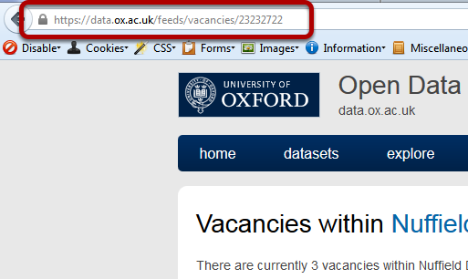

Add a Jobs Feed¶
Note
these user guides are being phased out and replaced with the guides on Haiku Knowledge Base
You can add a Job Feed to any page on your website. This shows you how to do this.
Find your jobs feed address¶
Go to https://data.ox.ac.uk/feeds/ and click on Vacancies to take you to a page listing jobs feeds for all departments at the University.
Find your department and click on the vacancies link.
Copy the web address.
Your site¶

Go to the page you would like to add the jobs feed to and click on Edit on the tool bar at the top of the page.

Scroll down the page until you reach the Text box. Paste the vacancies web address you copied from the data.ox.ac.uk into your page.
Create a link¶

Turn the web address you just copied into a link linking to the web address you just copied and pasted. Scroll down to the bottom of the page and save your changes. You will now see that you have a list of vacancies in your page. Clicking on a job title will bring up details of the vacancy.